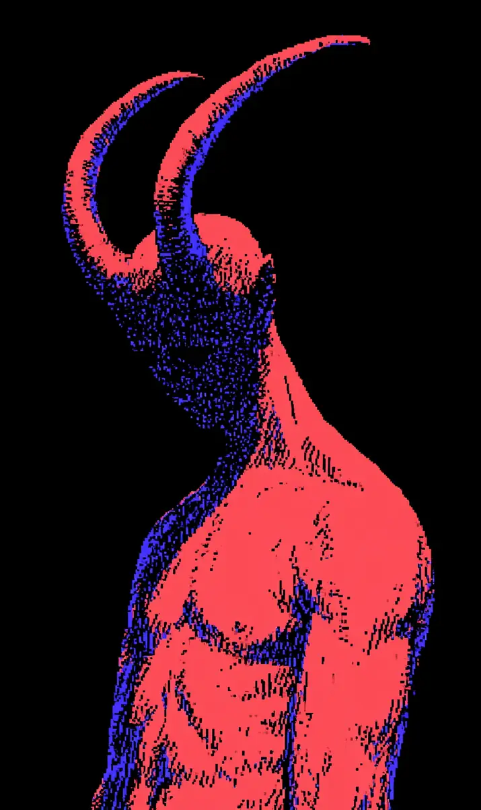

새벽 세 시, 바닥이 떨렸다.
[At three in the morning, the floor trembled.]
은하는 소리 때문에 잠에서 깬 적이 한 번도 없었다.
[Eunha had never once woken up because of a sound.]
태어날 때부터 세상은 조용했다.
[Since birth, the world had been quiet.]
그래서 은하는 진동으로 잠에서 깼다.
[So Eunha woke up from vibration.]
등이 닿은 장판이 아주 작게, 규칙적으로 흔들렸다.
[The floor mat against her back shook very slightly, in a regular rhythm.]
세 번. 쉬고. 두 번.
[Three times. A pause. Two times.]
은하는 눈을 뜬 채로 천장을 봤다.
[Eunha lay with her eyes open, looking at the ceiling.]
세 번. 쉬고. 두 번.
[Three times. A pause. Two times.]
누가 문을 두드리고 있었다.
[Someone was knocking on the door.]
은성빌라 502호에는 초인종이 없었다.
[Unit 502 of Eunseong Villa had no doorbell.]
있어도 은하에게는 소용없었다.
[Even if it had one, it would have been useless to Eunha.]
그래서 은하의 문에는 손님이 오면 불이 켜지는 작은 램프가 달려 있었다.
[So a small lamp that lit up when a guest arrived was attached to Eunha’s door.]
그 램프는 꺼져 있었다.
[That lamp was off.]
누군가 두드리고 있는데, 램프는 반응하지 않았다.
[Someone was knocking, but the lamp did not react.]
은하는 이불을 걷고 일어났다.
[Eunha pushed off the blanket and got up.]
맨발이 바닥에 닿는 순간, 진동이 멈췄다.
[The moment her bare feet touched the floor, the vibration stopped.]
은하는 문 앞까지 걸어갔다.
[Eunha walked up to the door.]
렌즈에 눈을 대고 복도를 봤다.
[She put her eye to the peephole and looked at the hallway.]
복도등이 꺼져 있었다.
[The hallway light was off.]
은성빌라의 복도등은 사람이 지나가면 켜졌다.
[The hallway light in Eunseong Villa turned on when a person passed by.]
사람이 있으면 켜져야 했다.
[If a person was there, it should have been on.]
어둠뿐이었다.
[There was only darkness.]
은하는 문에 손바닥을 댔다.
[Eunha put her palm on the door.]
은하가 소리를 확인하는 방법은 그것뿐이었다.
[That was the only way Eunha checked for sound.]
나무가 아주 약하게 떨고 있었다.
[The wood was trembling very faintly.]
문 반대편에서 무언가 계속 움직이고 있다는 뜻이었다.
[It meant something on the other side was still moving.]
은하는 손을 뗐다.
[Eunha took her hand away.]
그리고 다시 댔다.
[Then she put it back.]
이번에는 떨림이 손바닥 한가운데로 모였다.
[This time the trembling gathered into the center of her palm.]
문 반대편의 무언가도 같은 자리에 손을 대고 있었다.
[Something on the other side had placed its hand in the very same spot.]
은하는 그날 밤 다시 잠들지 못했다.
[Eunha could not fall asleep again that night.]
아침이 되자 은하는 그것을 꿈이라고 정리했다.
[When morning came, Eunha filed it away as a dream.]
은성빌라는 재개발이 확정된 건물이었다.
[Eunseong Villa was a building already slated for redevelopment.]
열두 세대 중 남은 사람은 넷이었다.
[Out of twelve households, four people remained.]
은하가 502호, 최 할머니가 401호, 그리고 이름을 모르는 남자 둘.
[Eunha in 502, Grandmother Choi in 401, and two men whose names she did not know.]
빈집이 많은 건물은 밤에 이상한 진동을 만든다고, 은하는 스스로에게 설명했다.
[A building with many empty units makes strange vibrations at night, Eunha explained to herself.]
계단에서 최 할머니를 만난 건 그날 오후였다.
[It was that afternoon that she met Grandmother Choi on the stairs.]
최 할머니는 은하를 보자마자 팔을 잡았다.
[The moment Grandmother Choi saw Eunha, she grabbed her arm.]
손가락이 뼈처럼 딱딱했다.
[Her fingers were as hard as bone.]
은하는 할머니의 입을 봤다.
[Eunha watched the grandmother’s mouth.]
은하는 입술을 읽을 수 있었다.
[Eunha could read lips.]
할머니의 입술이 말했다.
[The grandmother’s lips spoke.]
밤에 문 열지 마.
[Do not open the door at night.]
은하는 고개를 끄덕였다.
[Eunha nodded.]
할머니의 입술이 다시 움직였다.
[The grandmother’s lips moved again.]
이번 문장은 이해하기 어려웠다.
[This sentence was harder to understand.]
그건 소리로 와.
[It comes as a sound.]
은하는 할머니의 손을 잡고 천천히 물었다.
[Eunha took the grandmother’s hand and asked slowly.]
무슨 소리요?
[What sound?]
할머니는 대답하지 않았다.
[The grandmother did not answer.]
대신 은하의 귀를 아주 오래 바라봤다.
[Instead she stared at Eunha’s ears for a very long time.]
그리고 처음으로 웃었다.
[And then, for the first time, she smiled.]
부럽다.
[I envy you.]
그날 밤 은하는 불을 켜 놓고 잤다.
[That night Eunha slept with the light on.]
새벽 세 시에 다시 깼다.
[She woke again at three in the morning.]
이번에는 진동이 아니었다.
[This time it was not vibration.]
벽이 밝았다.
[The wall was bright.]
복도등이 켜져 있었고, 문 아래 틈으로 빛이 들어왔다.
[The hallway light was on, and light came in through the gap under the door.]
그 빛 속에 그림자 두 개가 서 있었다.
[Two shadows stood inside that light.]
발 그림자였다.
[They were the shadows of feet.]
누군가 문 바로 앞에 서 있다는 뜻이었다.
[It meant someone was standing right in front of the door.]
은하는 숨을 멈췄다.
[Eunha held her breath.]
그림자는 움직이지 않았다.
[The shadows did not move.]
십 분 동안 움직이지 않았다.
[For ten minutes they did not move.]
은하는 천천히 침대에서 내려왔다.
[Eunha slowly climbed down from the bed.]
바닥은 조용했다.
[The floor was quiet.]
은하에게 조용하다는 것은 떨림이 없다는 뜻이었다.
[For Eunha, quiet meant that there was no trembling.]
사람이 서 있으면 아주 작게라도 무게가 옮겨진다.
[When a person stands, their weight shifts at least a little.]
문 앞의 그것은 무게를 옮기지 않았다.
[The thing in front of the door did not shift its weight.]
은하는 렌즈에 눈을 댔다.
[Eunha put her eye to the peephole.]
복도등 아래, 붉은 것이 서 있었다.
[Under the hallway light, something red was standing.]
사람의 등이었다.
[It was a person’s back.]
벗은 등이었고, 색이 붉었다.
[It was a bare back, and the color was red.]
피가 묻은 붉음이 아니라, 원래 그렇게 태어난 붉음이었다.
[Not the red of smeared blood, but a red it had been born with.]
어깨는 넓고 말라 있었다.
[The shoulders were wide and dry.]
등뼈 하나하나가 벽지 무늬처럼 도드라졌다.
[Every single vertebra stood out like a pattern in wallpaper.]
머리에서 뿔 두 개가 자라 있었다.
[Two horns grew from its head.]
뿔은 길었다.
[The horns were long.]
천장에 닿을 만큼 길었고, 끝이 낫처럼 안으로 휘어 있었다.
[Long enough to touch the ceiling, with tips that curved inward like sickles.]
그것은 은하의 문을 등지고 서 있었다.
[It stood with its back to Eunha’s door.]
문을 보고 있지 않았다.
[It was not looking at her door.]
복도 끝, 401호를 보고 있었다.
[It was looking at unit 401, at the end of the hallway.]
그것의 등이 크게 부풀었다.
[Its back swelled up enormously.]
숨을 깊게 들이마시는 사람의 등이었다.
[It was the back of a person drawing in a deep breath.]
그리고 벽이 떨렸다.
[And then the wall trembled.]
은하의 렌즈가 떨렸다.
[Eunha’s peephole trembled.]
이마에 닿은 문이 떨렸다.
[The door against her forehead trembled.]
아주 크고 아주 긴 소리가 복도를 채우고 있었다.
[A very loud, very long sound was filling the hallway.]
은하는 그 소리를 듣지 못했다.
[Eunha could not hear that sound.]
대신 이가 아팠다.
[Instead, her teeth hurt.]
401호 문이 열렸다.
[The door of 401 opened.]
최 할머니가 나왔다.
[Grandmother Choi came out.]
할머니는 잠옷 차림이었고, 눈을 감고 있었다.
[The grandmother was in her nightclothes, and her eyes were closed.]
눈을 감은 채로 걸었다.
[She walked with her eyes closed.]
할머니의 입술이 움직였다.
[The grandmother’s lips moved.]
은하는 그 입술을 읽었다.
[Eunha read those lips.]
네.
[Yes.]
누가 이름을 부르면 사람은 대답한다.
[When someone calls your name, a person answers.]
그것은 배우는 것이 아니라 몸에 새겨진 것이다.
[That is not something you learn; it is carved into the body.]
평생 한 번도 대답해 본 적 없는 사람은 은하뿐이었다.
[Eunha was the only one who had never once answered in her entire life.]
복도등이 꺼졌다.
[The hallway light went out.]
은하는 아무것도 보지 못했다.
[Eunha could see nothing.]
그날 밤 이후, 은성빌라에는 세 사람이 남았다.
[After that night, three people remained in Eunseong Villa.]
사흘 뒤에는 한 사람이 남았다.
[Three days later, one person remained.]
은하였다.
[It was Eunha.]
경찰은 오지 않았다.
[The police did not come.]
재개발이 확정된 건물에서 사람이 사라지는 것은 이상한 일이 아니었다.
[People vanishing from a building slated for redevelopment was not a strange thing.]
은하는 짐을 쌌다.
[Eunha packed her things.]
다음 날 아침 첫차로 떠날 생각이었다.
[She planned to leave on the first bus the next morning.]
마지막 밤이었다.
[It was the last night.]
새벽 세 시에 은하는 깼다.
[At three in the morning, Eunha woke.]
이번에는 진동도 없었고 빛도 없었다.
[This time there was no vibration and no light.]
방 안이 따뜻했다.
[The room was warm.]
여름이 아닌데 따뜻했다.
[It was not summer, and yet it was warm.]
은하는 눈을 떴다.
[Eunha opened her eyes.]
천장이 가까웠다.
[The ceiling was close.]
천장이 가까운 게 아니었다.
[The ceiling was not close.]
천장과 은하 사이에 무언가 있었다.
[Something was between the ceiling and Eunha.]
붉은 것이 침대 위로 몸을 굽히고 있었다.
[The red thing was bending its body over the bed.]
뿔이 벽지를 긁고 있었다.
[Its horns were scraping the wallpaper.]
얼굴은 보이지 않았다.
[Its face was not visible.]
얼굴이 있어야 할 자리에는 아무것도 없었다.
[There was nothing in the place where a face should have been.]
입이 없었다.
[It had no mouth.]
은하는 그제야 이해했다.
[Only then did Eunha understand.]
그것은 부르는 존재였다.
[It was a thing that calls.]
부르고, 대답을 받아 가는 존재였다.
[It calls, and it takes the answer away.]
그런데 은하는 한 번도 그 부름을 받은 적이 없었다.
[But Eunha had never once received that call.]
그래서 그것은 기다렸다.
[So it had waited.]
다른 사람들이 다 없어질 때까지 기다렸다.
[It waited until all the other people were gone.]
그리고 은하를 관찰했다.
[And it studied Eunha.]
문에 댄 손바닥, 읽는 입술, 움직이는 손가락.
[The palm on the door, the reading lips, the moving fingers.]
붉은 것이 팔을 들었다.
[The red thing raised its arms.]
팔은 두 개였다.
[It had two arms.]
손가락은 열 개보다 많았다.
[It had more than ten fingers.]
그리고 그것이 수어를 했다.
[And then it signed.]
서툴렀다.
[It was clumsy.]
아이가 처음 글씨를 배우는 것처럼 서툴렀다.
[Clumsy, like a child learning to write for the first time.]
손가락이 반대로 꺾이면서 은하의 이름을 만들었다.
[Its fingers bent backward as they formed Eunha’s name.]
은. 하.
[Eun. Ha.]
은하는 대답하지 않았다.
[Eunha did not answer.]
이불을 쥐고, 입을 다물고, 손을 몸 아래에 깔았다.
[She gripped the blanket, shut her mouth, and tucked her hands beneath her body.]
손이 없으면 대답할 수 없다.
[Without hands, you cannot answer.]
그것은 기다렸다.
[It waited.]
은하도 기다렸다.
[Eunha waited too.]
창밖이 조금씩 밝아졌다.
[Outside the window, it slowly grew brighter.]
은하는 아침까지 버틸 수 있다고 생각했다.
[Eunha thought she could hold out until morning.]
붉은 것의 어깨가 다시 부풀었다.
[The red thing’s shoulders swelled again.]
숨을 들이마시고 있었다.
[It was drawing in a breath.]
입이 없는데 숨을 들이마시고 있었다.
[It had no mouth, and yet it was drawing in a breath.]
방 안의 공기가 은하의 폐에서 빠져나갔다.
[The air in the room drained out of Eunha’s lungs.]
그리고 은하는 태어나서 처음으로 소리를 들었다.
[And then, for the first time in her life, Eunha heard a sound.]
소리는 귀로 오지 않았다.
[The sound did not come through her ears.]
머리 안쪽에서 바로 만들어졌다.
[It was made directly inside her head.]
그것은 은하의 이름이었다.
[It was Eunha’s name.]
아주 다정한 목소리였다.
[It was a very gentle voice.]
삼십 년 동안 은하가 상상해 온 모든 목소리보다 다정했다.
[Gentler than every voice Eunha had imagined across thirty years.]
은하야.
[Eunha.]
은하의 입술이 저절로 벌어졌다.
[Eunha’s lips parted on their own.]
평생 소리를 그리워한 사람에게, 세상의 첫 소리는 거절할 수 있는 것이 아니었다.
[To someone who had longed for sound her whole life, the first sound in the world was not something she could refuse.]
네.
[Yes.]
아침에 은성빌라 502호의 문은 열려 있었다.
[In the morning, the door of unit 502 in Eunseong Villa stood open.]
안에는 아무도 없었다.
[Inside there was no one.]
벽지에는 천장까지 이어진 긴 자국 두 개가 남아 있었다.
[On the wallpaper, two long marks remained, running all the way to the ceiling.]
그리고 문 안쪽에 손바닥 모양의 자국이 하나 있었다.
[And on the inside of the door there was one palm shaped mark.]
그 옆에 또 하나가 있었다.
[Beside it there was another.]
두 자국은 정확히 같은 자리에 겹쳐 있었다.
[The two marks overlapped in exactly the same spot.]